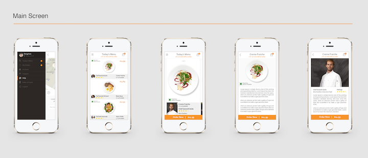

OVERVIEW
_
COMPANY & MISSION
Caper | Reimagining dish discovery and empowering local purveyors.
MY ROLE
I’m employee #1 at Caper, responsible for the creative direction, day-to-day operations, experience strategy, and design of the iOS app. I lead efforts to build our brand, evolve the service, and anticipate user and purveyor pain points, working closely with a tight-knit, cross-functional team, the CTO, and a group of overseas developers.
WHAT I DID
- Market Research
- UX Design
- UI Design
PLATFORMS
- Mobile - native iOS
TECHNOLOGIES
- Sketch
- InVision
- Illustrator
- Mantis
- Trello
DELIVERED
High fidelity prototype of Caper 2.0 for public beta launch, ready to hand off to developers. Caper v 1.0 built for our closed-beta is currently available on the App Store.
In 2015, a group of food lovers came together to reimagine the dish discovery experience. This is my story of designing and managing Caper - an iOS app that helps food lovers find new, exciting dishes and empowers local purveyors to share their craft while growing their community of “regulars.”
CHALLENGE
_
A better way to discover dishes and a friendlier food platform for local purveyors
With the explosion of the food-on-demand industry, Caper was born to combat late deliveries, overpriced portions, and the ever growing sea of underwhelming menu options. We believe quality meals in NYC should be easy to find (curated for discovery), affordable (fast-casual price point), and a short walk away (pick-up only to eliminate delivery fees and drive foot-traffic into the restaurant). We also love small, local businesses and want them to succeed.
Our challenge was to enter the highly competitive on‐demand food industry and provide an alternative way to find exciting food by anticipating of the evolution of user behavior - a shift towards mindful consumption, a desire to combat decision-fatigue when faced with overwhelming menu choices, and a backlash to the outrageous and ever-rising food-delivery fees. We also wanted to provide an alternative for jaded restaurants (local purveyors) who are tired of using other 3rd-party platforms charging exorbitant middle-man fees.
What We Inherited
Before the New York office was established, the co-founders and an overseas dev team had already started building the earliest version of our app without prior market or user research on our target demographic. Upon seeing the app, we realized immediately we would need to make adjustments specific to the New York market.

With our time constraint in mind, we did as much guerilla testing and made as many adjustments as time allowed so we could get a minimal viable product out for closed-beta testing in front of real users. The result is Caper v 1.0, currently available on the App Store.
Our Goals
With a small round of angel funding, Caper had enough runway to rapidly research, prototype, test, and build Caper v 2.0 in preparation for a public beta launch. We needed to:
(1) Start from the beginning and fully understand the user demographics (diners and purveyors) through extensive research and testing, and
(2) Iterate on user feedback to remove, improve, or design additional features for our public beta launch
APPROACH
_
The Discovery Phase
HOW DO YOU DECIDE WHAT TO EAT?
The discovery phase was rapid and constrained to a two-week period, allowing us to define project goals, assess existing features, understand our competitors, uncover user behaviors, needs, and pain-points. To start, we needed to get into the perspective of our users to fully understand their habits and who they are. We wanted to learn, through our user survey, the following:
- User eating habits during the weekdays and the weekends: how often do they cook at home or order in
- What technologies are used to order in and what pain points exist in these platforms
- Dish discovery patterns: how often do users try new dishes and what prompts them to try a new dish
- What role does their mood play in influencing dish selection
Our research revealed that mood, habit, and time constraints play a big role in eating habits. Price is a major pain point in ordering out, which reinforces our goal of curating for dishes within the fast-casual price range. Our curation algorithm will need to be robust so it can learn and display the most relevant dishes from the user’s order history, taste profile (long-term food preferences), and daily mood.
Dish offerings should include photos, descriptions, and recommendations from trustworthy sources (e.g. people from within the user’s network) as well as main ingredients and allergens information. Delivery is a feature that users are used to, but they are also frustrated by the additional fees, how long it takes, and the diminished quality of the food when it arrives.
VIEW SURVEY >
USER EMPATHY
To dig deeper into the minds of our users, we conducted interviews with testing participants, colleagues, stakeholders (investors and purveyors), and friends. We also shifted through existing feedback and pain points from our closed-beta testing of Caper v1.0. Through this, we gained valuable insight into our user’s needs and it gave us a greater understanding of their attitude towards our proposed solution.
We designated two main persona archetypes and constantly referred back to them throughout the cycle of the project to ensure that we stayed true and accountable to our users. Through careful analysis of our research, we identified these variables to segment our target user base of millennials and young professionals: time constraint, cost, and variety of available dishes.
SEE PERSONAS >
UNDERSTAND THE COMPETITION
The 3rd party food on-demand industry is extremely competitive, and although Caper is a unique model, we conducted market research and did a competitive analysis to understand our user’s pain points as well as the major strengths and weakness of similar companies in our field.
VIEW COMPETITIVE ANALYSIS >
Armed with the above knowledge, we felt confident moving forward into the next phase of developing our product.
Structure the Experience
With an better understanding of our potential users and competitors in the market, I created user stories to guide and prioritize product features. I put together user flows to visualize their end-to-end experience and also put together user flows describe how they would interact with the app.
VIEW USER STORIES >
 VIEW USER FLOWS >
VIEW USER FLOWS >By synthesizing all of our research results, we were able to extract requirements for the next version of our app, helping us understand what existing functionality and content would be useful, what new features should be included and what needed to be removed. I created a spreadsheet that demonstrated what features currently exist in the private-beta product and what needed to exist in the next iteration of Caper.
Polishing Our Identity
To clearly communicate the personality of our app, we worked around this set of experience principles:
- Eliminate decision fatigue
- Humanize the eating experience again
- Promote purveyor stories
The company was originally incorporated under the name “Kichin,” but after a quick surveying of strangers and friends, we wanted to change our name to something that was less generic and had more personality.
We hired an external designer for the final logo design and gave him the following parameters: we are “quirky, playful, and fun” and a team brainstorming session yielded the name “Caper,” which means “lively or playful” but also has the dual meaning as the name of a food item. For typography, I chose the clean, minimalistic Muli by Vernon Adams, paired with the beautiful Lora by Cyreal.
VIEW COMPLETE STYLE GUIDE >
The Framework
WIREFRAMES & SKETCHES
With the results of our research to guide us, our goals for Caper v 2.0 were threefold - first, we needed to address the pain point of navigation opaqueness brought up by our beta-testers. Survey and interview results revealed weakness and inefficiency in the placement of the sidebar menu and back-button in Caper v 1.0, so we set out to find a better solution for our navigation system.
Second, since curation is the crux of our model, we needed to make it clear to our users that we are selecting four dishes for them based on their input.
Third, using our research results as a guide, we needed to build and test these additional features: creating a Taste Profile, saving favorite dishes and purveyors, building a search function, and entering a custom location address.
With these goals in mind, I began sketching and exploring different navigation patterns, moving rapidly from sketches to building low-fidelity prototype on InVision.
TEST EARLY & TEST OFTEN
To address the opaqueness of Caper v 1.0’s navigation, we revisited menu items, trimming features down to the essentials and experimented between the sidebar menu and the standard iOS navigation bar.
Early guerilla testing results indicated that the standard iOS navigation bar was equally confusing for our users. A second, deeper look indicated that a lot of the menu items did not need to be placed out in the open since it adds unnecessary distraction to the flow of the app.
Thus, we shifted these secondary functions back into the sidebar menu with one significant change - we limited the menu’s accessibility. By displaying the sidebar menu only on select screens, we cleared up our navigation flows and mitigated the confusion of our users greatly.
Armed with these testing results from my low-fidelity wireframes, I now had a stronger foundation of how users would move through Caper. Using Sketch and InVision, I built a high-fidelity, interactive prototype that was now ready for additional usability testing.
#1 - USABILITY TEST
I conducted usability tests through UserTesting.com and with WeWork community members for the following tasks:
- Browse and look for the four curated dishes
- Find dish details
- Checkout and complete an order
While the users had no problem finding the dish details, the majority of them struggled with finding all four curated dishes. In this testing version, the user immediately sees the first dish with the full-screen image after filling out their Taste Profile.
There was a period of struggling between tapping and swiping up before users realized they could to swipe left/right to see additional dishes. To simplify this flow and make our options clearer, we added an additional “dish results” page so all four dishes are displayed first.
Additional feedback from our users revealed a lack of clarity in the check-out process. In this testing version, after the user placed an order they would see a pop-up window that says “Congratulations on your order!” Their immediate reaction is to dismiss the window quickly, and with no secondary confirmation outside of the “Order History” page, users were left with a sense of uncertainty and wondered if their order went through.
To create a better experience, we put in an additional confirmation page and moved the Notifications Primer to appear after their first order.
With this updated flow, users are already commited to the platform and thus more open to enabling notifications. After enabling notifications, they’re taken to a detailed Order Confirmation page that includes their receipt, purveyor information, map to the restaurant, and a live order status.
#2 - A/B TEST FOR DISH DISPLAY
As mentioned previously, results from the initial tests of our low-fidelity wireframes showed that immediately jumping to a full-screen dish display hides the fact that there are more dishes available. Users didn’t know they can swipe to see additional selections, and it was also unclear that we are offering them four curated meals.
With this knowledge, we added an additional screen that displayed all four dishes together. Using Usabilityhub.com, I conducted a design preference test for dish display options.
The results were exactly 50-50, so I increased the number of testers and ran the test again. Once more, the preference rate was exactly 50-50! I brought the results to my team and discussed the merits of each design:
- Pros of Full-bar Design: friendlier for content display, and no worry that the dish name will be cut-off or obscured.
- Pros Square-block Design: full image of dishes is visually attractive and more appealing.
In the end, the team voted for the Full-Bar Design, which was my preference as well because ultimately it is a more flexible solution in terms of content display.
INTRODUCING CAPER 2.0
_
Eat Something New
The gallery below shows the final iOS app ready for development.
ONBOARDING SCREEN
Taste Profile Creation - in Caper v 1.0, account creation was optional because we wanted to decrease the abandon rate of new users. However, because Caper’s uniqueness stems from our ability to curate for the user, we needed user input to make our dish displays relevant. Per the iOS Human Interface Guidelines, we emphasized the personalization of the Caper experience, keeping the sign-up process quick, easy, and unobtrusive and making the Taste Profile creation fun and enticing.
DISH DISPLAY
Language is a powerful tool - we needed to get it right with Caper v 2.0 to guide users through previous design ambiguities. In Caper v 1.0, the first screen we showed users is the “Mood Board,” which included a “Surprise Me!” option.
In v 2.0, we shifted the Mood Board and removed the “Surprise Me!” option, updating the app flow to be less intrusive and more relevant. Immediately after creating a Taste Profile, users see a primer window explaining the curation and selection process. We then display the results of our curation efforts and utilized the power of language by adding “SELECTED FOR YOU,” another reminder to our users that these four dishes are picked just for them.
Based on feedback, we removed the Mood Board as the first screen since it was distracting and added it instead as an additional option for users to “SELECT A MOOD” if they weren’t feeling the curated dishes.
CONCLUSIONS
_
What I Learned
ESTABLISH VISION & DIRECTION EARLY
One of the best parts of working at a young, new company is the feeling that anything is possible - the sky is really not the limit because we’re shooting for the moon. However, hard on the heels of euphoria is the feeling, “Omg we’re building this rocket-ship while we’re hurtling towards space!” followed by repeated mutterings of, “This is normal. Nobody panic.” We’re building a new company, what else is new?
That said, our team could have benefited from building a stronger process to endure the lack of direction and moments of uncertainty, when our vision and direction was fluid and shifted as young companies are wont to do. By keeping the correct focus up front, we could have meandered less, solidified our goals, and focused on the user from the beginning, which brings us to my next point.
TALK TO THE USERS
There is no point in building a product that users don’t find valuable or useful. The earliest iteration of the product was built in a vacuum by an off-site team, who had done no research specific to our New York market and target users. We were lucky enough to have some time where we could start over from the beginning to investigate who would actually use this product and how they would use it.
LEARN TO SAY NO
Our most valuable insights came from our rapid beta-testing and guerilla-testing sessions, but with the wealth of information comes the dangers of feature creep. In retrospect, there were moments when we could have said no many more times than saying yes and stuck to the plan for developing a minimal viable product.
BUILD A STRONGER COMMUNICATIONS FRAMEWORK
We were an international team, and figuring out the best communication process/platform between our New York and India teams took longer than it should have. Time-zones aside, all of us also needed to learn and adjust quickly to the vastly different cultural and professional working styles. We could have improved on our management processes such as setting timelines, keeping track of bugs, and finalizing the product feature-list.
WHAT'S NEXT?
It was my privilege and intense joy to have been a part of the Caper team. We were a seed-stage startup with an audacious dream of taking on the large food-tech companies and championing those local mom-and pop restaurants who were working hard to stay relevant in the competitive New York market. Sadly, after creating this app and building an efficient enterprise system, the project ran out of funding right before our public-beta launch and shutdown operations in September 2016.
I loved my time at Caper and am thankful for the leadership, their support, and the immense learning opportunities. I especially enjoyed the unique challenges of building and forming a team from scratch. In the end, I truly believe there’s not a better group of humans I could have journeyed with.
Many thanks to Team Caper for this exciting adventure!
To learn more, please visit our website at www.caper.ly.